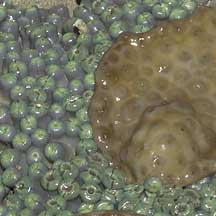
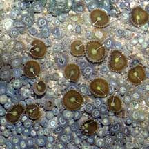
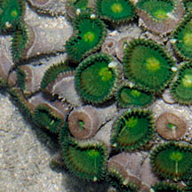
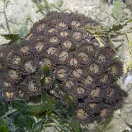
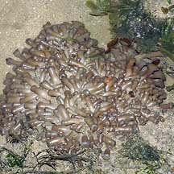
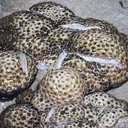
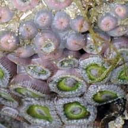

|
|
| zoanthids text index | photo index |
| Phylum Cnidaria > Class Anthozoa > Subclass Zoantharia/Hexacorallia |
| Zoanthids Order Zoanthidea updated Dec 2019
Where seen? These tiny but tough flower-like animals often carpet rocky and rubbly areas. Some are adapted be regularly exposed to the air at low tide. These animals are often the first to settle on any vacated space in a reef. What are zoanthids? Zoanthids belong to the same Class Anthozoa as sea anemones. But while true sea anemones belong to Order Actiniaria, zoanthids belong to a different Order Zoanthidea. Zoanthid taxonomy is undergoing some review so the number of known zoanthids species range from 200 to 60 depending on how the species are defined. Features: Zoanthids look like tiny sea anemones. But while true sea anemones are solitary polyps, most zoanthids live in colonies like corals do. But zoanthids don't produce a hard skeleton like the hard coral colonies. Instead, their tissues are leathery and composed partly of chitin (the same substance that insect exoskeletons are made of). The typical polyp has a cylindrical body column, topped by a smooth, flat oral disk that is edged by short tentacles, usually in two rows close to one another. The oral disk is often in a contrasting, bright colour from the usually brown or drab tentacles. When exposed at low tide, however, the animal retracts its tentacles into its body column and then looks like a strange blob of jelly. |
 Two kinds of zoanthids Pulau Hantu, Mar 05 |
 Two kinds of zoanthids Pulau Tekukor, May 07 |
 Body column with oral disk edged with short tentacles. Cyrene Reef, Jul 10 |
| Zoanthids may have three different living arrangements. Each zoanthid
polyp may be solitary but located near one another. These polyps are
large with thick, fleshy polyps on tall columns. Or the zoanthid polyps
are joined to one another by stolons (tube-like structures that spread
across the ground like a root or runner). Or the zoanthid polyps may
be embedded in a common mat of tissue. The tissue may be strengthened
by incorporating sand. The colony may form mats on the sand or encrust
rocky areas. The shape of the same zoanthid species may vary depending on where they are found. Those inhabiting areas with strong waves tend to be short and hug the surface. Others found in deeper, calmer waters are taller, with longer tentacles. Sometimes confused with sponges, ascidians and other blob-like animals. Here's more on how to tell apart blob-like animals. They are also sometimes confused with sea anemones. Here's more on how to tell apart animals with a ring of smooth tentacles. |
 Sometimes packed so tightly that they are mistaken for hard corals. Chek Jawa, May 05 |
 At low tide with their tentacles retracted they look like a clump of sausages. Chek Jawa, Aug 05 |
 Sea mat zoanthids have polyps too, embedded in a shared tissue. Kusu Island, Oct 04 |
Despite their toxins, some animals have adapted to eat zoanthids. These include the Common hairy crab, filefishes and nudibranchs. What do they eat? Most zoanthids feed on plankton, some also feed on finer particles. Many harbour zooxanthellae (symbiotic algae) inside their bodies. These carry out photosynthesis and may contribute nutrients to the host polyp. Zoanthid babies: Zoanthids generally reproduce asexually: new polyps bud to enlarge the colony. However, they also reproduce sexually. The polyps may produce sperm or eggs, but usually only either one at a time. Eggs and sperm are released synchronously for external fertilization, in mass spawning similiar to that practiced by hard corals. Human uses: Palytoxin, the poison extracted from a zoanthid, has been used to better understand how our body works and may provide better treatment of hypertension, heart disease and other disorders. Zoanthids are also a popular item in the live aquarium trade, although their toxins make them dangerous to handle. Status and threats: Zoanthids are not listed among the threatened animals of Singapore. However, like other creatures of the intertidal zone, they are affected by human activities such as reclamation and pollution. Trampling by careless visitors, and overcollection also have an impact on local populations. |
| Some zoanthids on Singapore shores |
|
 Pink button zoanthids (Zoanthus vietnamensis) Polyps with pink edges at the top of the body column, more obvious in retracted polyp. |
| Order
Zoanthidea recorded for Singapore Wee Y.C. and Peter K. L. Ng. 1994. A First Look at Biodiversity in Singapore. +from our observations
|
| Acknowlegement With grateful thanks to Dr James Reimer of JAMSTEC (Japan Agency for Marine-Earth Science and Technology) for identification of the zoanthids. Links
|